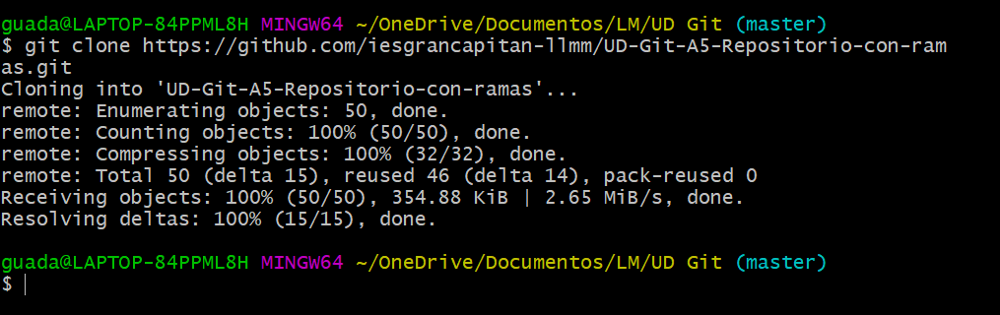
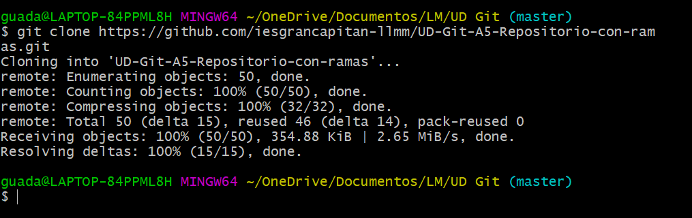
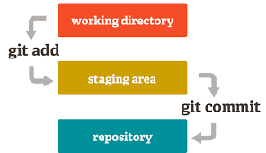
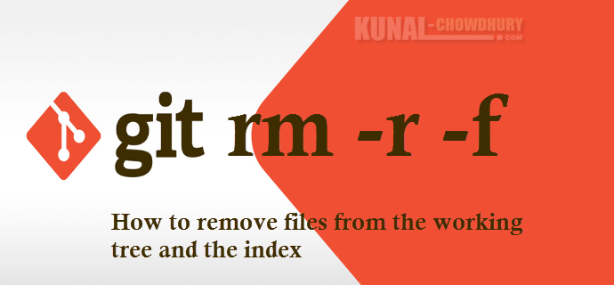

Realiza cada uno de los siguientes apartados. Trabajarás con un repositorio y sus ramas
Descárgate el repositorio en una carpeta local.
 

Este repositorio tiene varias ramas cada una con distintos commits. Lístalas e indica qué significa el asterisco

El asterisco significa la rama donde nos encontramos en ese momento.
Cambia de rama y fíjate en el sistema de archivos (working tree) cómo aparecen y desaparecen los ficheros. Siguen estando ahí, pero en cada rama (piensa en las ramas como mundos paralelos) los contenidos son distintos.
En cada rama debes hacer una modificación: añadir pantallazos e introducirlos en el este fichero index
En una de las ramas hay muchos ficheros temporales que debes borrar. Asegúrate de que sólo borras los imprescidibles
Tras realizar los distintos commits debes fusionar cada rama a la rama principal.
Muestra el estado de los commits de forma gráfica


Crea una rama nueva y añade contenido relacionado con git

Git, que presenta una arquitectura distribuida, es un ejemplo de DVCS (sistema de control de versiones distribuido, por sus siglas en inglés). En lugar de tener un único espacio para todo el historial de versiones del software, como sucede de manera habitual en los sistemas de control de versiones antaño populares, como CVS o Subversion (también conocido como SVN), en Git, la copia de trabajo del código de cada desarrollador es también un repositorio que puede albergar el historial completo de todos los cambios. Además de contar con una arquitectura distribuida, Git se ha diseñado teniendo en cuenta el rendimiento, la seguridad y la flexibilidad.
Muestra las ramas que todavía no se han mergeado con respecto a la rama actual
Una vez fusionadas/mergeadas todas las ramas sube el repositorio local en el remoto